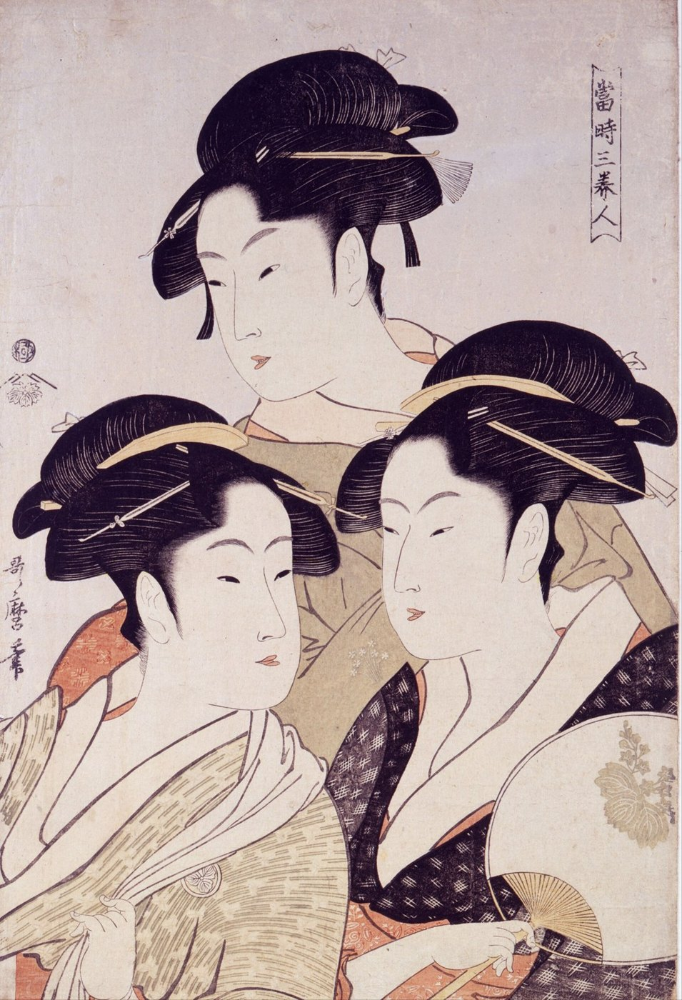
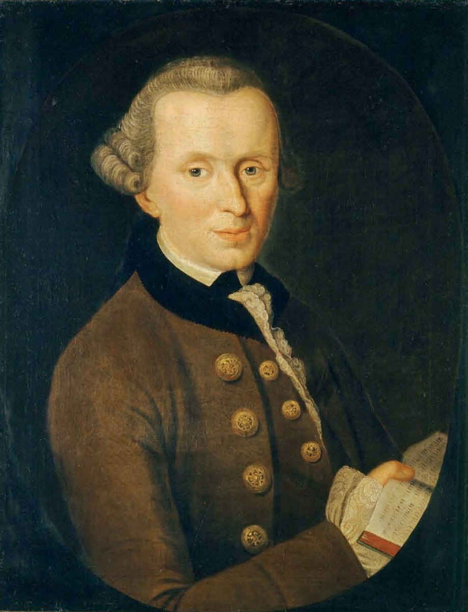
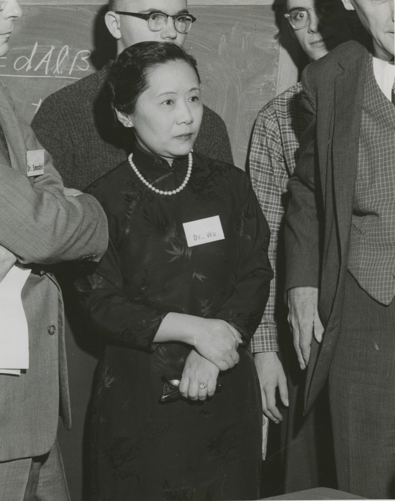

序右京は左にある
扉の手袋は、十七世紀前半のイギリスで作られた一対である。指の形も、袖口の花の配置も、左右を返しただけで同じだ。どちらが右手用かは、指の並びだけでは決まらない。掌の側を見ているのか、甲の側を見ているのかを、先に決めなければならない。華やかな袖口が見えているから甲の側だろう、と見当はつく。ただしそれは、飾りは人に見せる側に付ける、という作り手と見る者のあいだの約束に頼った推理である。
電話の向こうの相手に、指もささず、図も描かずに「右」を教えてみるとよい。「時計の針の回る向き」と言えば時計を、「心臓のない側」と言えば人の体を、相手と共有していることを当てにしている。隣に立っていれば、右手を挙げてみせるだけで一瞬で済むのに。
平城京の地図を、いつものように北を上にして開く。右京は西にあり、地図の左側に来る。都の左右は、地図を見る者の右左ではなく、宮の奥から南を向いて座る天皇の身体から測られていた。左京が東になり、左大臣が右大臣より上座に置かれたのも、この身体の左である。
その平城京で、養老3年2月3日（719年）、一つの詔が出た。『続日本紀』は記す。「初令天下百姓右襟」――はじめて天下の百姓に、襟を右にさせた。この日の記事は、官人に笏を持たせることも定めている。唐の服制に合わせ、衽を左に合わせる風をやめさせたものと解されている。『論語』憲問篇で孔子は、管仲がいなければ「吾其被髪左衽矣」、われわれは髪を結わず衽を左にしていただろう、と言った。左衽は、文明の外にいる者の印だった。

国家は、右を一語で配った。だがその一語は、千三百年たったいまも取り違えられる。右前とは、右の身頃が上に来ることではない。着る人の右の身頃を先に体に当て、その上に左を重ねることをいう。「前」は「先」の意である。一語で配られた右は、着る人の身体の上で、もう一度組み立て直される。
右は配れるのか。それとも、手から手へ渡すしかないのか。
一指さすしかない

1768年、カントは短い論文「空間における方位の区別の第一根拠について」で、一対の手を持ち出した。右手と左手は、指の長さも関節の並びも、部分どうしの関係はすべて同じでありうる。それなのに、一方を他方の場所に重ねることはできない。カントはこれを「不一致対称物」と名づけ、思考実験を添えた。宇宙で最初に創られたものが一本の手だったとすれば、それは右か左か、どちらかでなければならない。部分の関係だけで空間が決まるのなら、その手は人体のどちら側にも合うことになるが、それはありえない。ゆえに空間は、物の関係から独立した絶対的なものだ――これが1768年の結論だった。
十五年後の『プロレゴメナ』§13で、カントは同じ手を、反対の結論のために使う。鏡のなかの手ほど、元の手に似て、あらゆる点で等しいものはない。それでも鏡の手を元の手の場所に置くことはできない。一方の手の手袋は、他方の手には使えない。ここからカントは、空間は物そのものの性質ではなく、外から物を直観するときの形式だと論じた。
結論は反対を向いたのに、手は残った。§13には、左右についての決定的な一文がある。逆向きに巻いた巻貝のような、相似で等しいが重ならないものの違いは、「どんな概念によってもわからせることはできず（durch keinen einzigen Begriff）」、ただ右手と左手への関係――直観に直接かかわる関係――によってしかできない。
右は定義できない。指さすことしかできない。指さすには、さす身体と見る身体が、同じ場所に要る。
1768年の論文は、自然の巻き方にも触れていた。「ホップはすべて支柱に左から右へ巻きつく。豆は逆に巻く」。このホップは、百年後にもう一度出てくる。
二腕で覚えよ
1873年、マクスウェルは『電磁気論』の序論で右ねじを言葉で定義し、そのあと脚注で、言葉より腕を信じよと書いた。右手の甲を外へ返しながら手を前へ突き出すとき、その腕の筋肉の働きは「どんな言葉による定義よりも（than any verbal definition）」しっかりと右ねじの運動を記憶に刻むだろう。ふつうのコルク抜きを、その物的な象徴にしてもよい。
脚注は続く。ブドウの巻きひげは右ねじ、ホップの巻きひげは左ねじだから、二つの系を「ブドウの系」「ホップの系」と呼んではどうかとミラー教授が提案した。ところがド・カンドルは、そのホップの巻きひげを最初に「右巻き」と呼んだ。カントは「左から右へ」と書いた。同じ植物の同じ巻きが、右とも、左とも、左から右へとも呼ばれた。巻きの名は、植物ではなく、眺める者の立ち位置についている。
マクスウェルは、自分たちが採るブドウの系はリンネのものであり、「日本を除くすべての文明国のねじ職人」のものだ、とも書いた。この一文が伝えるのは、右ねじが規格や教科書より先に、職人の手の慣行だったということである（日本についての記述の当否は確かめられていない）。その節でマクスウェルは、右手系はトムソンとテイトの『自然哲学』が採っている系であり、ハミルトンの四元数は逆の左手系を採っている、とも記した。外積の祖先を作った当人は、左で書いていたのである。
教科書とは、職人の手渡しを一行の配布に変える装置だった。「通常は右手系を用いる」という講義資料の一行は、その末裔である。
三驚きはどこにあったか
1820年7月、コペンハーゲンのエルステッドは、ラテン語の小冊子を各国の学者に送った。南北を向いて静止した磁針の上に、導線を平行に張り、電流を流す。磁針は導線に沿ったままではいなかった。決まった一方へ振れた。
半世紀あまり後、マッハは『力学』（1883年）でこの実験を振り返った。アルキメデスが使った対称性の原理ほど論理の力の強い本能的な知識でさえ、人を誤らせることがある。磁気子午線に沿った磁針が、上に平行に張った導線の電流で、決まった向きにそれると初めて聞いたときの「知的な衝撃（geistige Erschütterung）」を、読者の多くは覚えているだろう、と。
衝撃の理由は単純だ。導線と磁針を含む鉛直な面を考えると、配置はこの面について左右対称に見える。対称な原因からは対称な結果しか出ないはずだから、磁針は動くとしても、この面の中だけだろう。ところが磁針は面の外へ、片側へ出ていく。
マッハは別の本で、アンペールの「泳ぐ人」に自分を重ねてこの向きを覚えた。電流の中を泳ぎ、磁針を見ている自分の左へ、北極が振れる。自分の身体を実験の中に入れなければ、向きを言い表せない。その脚注では、時計は針の回る向きによって、自分が日時計の子孫であり、北半球で発明されたことを告げている、と書いた。天皇が南を向いて座るのも、北半球で日が南中する側を正面にとる古い礼の考え方だとされる。そうだとすれば、都の左右と時計の右回りは、同じ太陽の下で測られたことになる。
対称を破っていたのは、電流ではない。磁針のほうが、はじめから巻いていた。アンペール以来の描き方では、磁石の北と南の区別は、内部をぐるりと回る小さな電流の向きの区別として表される。巻いたものを鏡に映せば巻きは逆になり、北と南が入れ替わる。対称な面の中に、はじめから巻いた物が置かれていた。それを一本の矢印と見ていたのは、見る側の思い込みだった。
重力と電磁気と、原子核を結びつける強い力。そのどの法則を使っても、右を言葉だけで送ることはできない。右手系の右は、法則のなかにはない。
四配れる右
1964年、マーティン・ガードナーは『自然界における左と右』で、この難問に名前をつけた。オズマ問題である。電波でしか交信できず、互いに一つも共通の物を見ることができない遠い星の相手に、「左」の意味を伝えられるか。名前は、1960年にグリーンバンクの電波望遠鏡で二つの恒星に耳を澄ませたドレイクの「オズマ計画」から来ている。カントの手も、マクスウェルの腕も、マッハの時計も、電波には載らない。

答えは、ガードナーの本より先に、ワシントンの低温研究室で出ていた。1956年、リーとヤンは、弱い相互作用で左右の対称性（パリティ）が保たれているという実験の証拠はまだない、と論文で指摘し、確かめる実験を提案した。その年の暮れ、クリスマスから年末にかけて、コロンビア大学の呉健雄は米国国立標準局の研究者たちとともに、コバルト60を含む結晶を絶対零度の上0.003度ほどまで冷やし、磁場で原子核の向きをそろえ、ベータ崩壊で飛び出す電子を数えた。電子は、そろえた向きの片側に多く出た。
年が明けた1957年1月17日、パウリはチューリッヒからワイスコップに書いている。「だが私は、神さまが弱い左利きだとは思わない（Ich glaube aber nicht, daß der Herrgott ein schwacher Linkshänder ist）」。「弱い」は弱い相互作用に掛けた洒落で、実験は左右対称に出るほうに大金を賭けてもよい、と続けた。十日ほどのち、パウリは「賭けをしなくてよかった」と書いた。
この実験で、右は初めて配れるものになった。ただし、手順を書くときに「原子核のスピンの向き」と言ってはならない。スピンの向き自体が、右ねじの約束で決めた矢印だからだ。約束を使わずに書くと、こうなる。コバルト60を含む結晶をコイルの中に置いて、ごく低い温度まで冷やし、コイルに電流を流す。電子がより多く飛んでくる側からコイルをのぞくと、導線の中を電子がある向きに回っている。その向きを「反時計回り」と呼べ。――時計を一度も見たことのない相手にも、時計回りが渡る。
それでも、最後の前提が一つ残る。相手の星が反物質でできていれば、同じ手順から逆の向きが届く。言葉だけで配れるようになった右は、「相手も同じ物質でできている」という、電波では確かめようのない前提に支えられていた。その前提も、1964年に中性K中間子で見つかった別の破れによって揺らぎはじめる。右の配布は、手渡しを消すのではなく、手渡しの要る場所を一段ずつ奥へ押しやってきた。
結右手は二度使う
719年の詔は右を一語で配り、受け取った人々は自分の身頃の上でそれを組み立て直した。カントは右を指さし、マクスウェルは腕に覚えさせ、マッハは自分を電流の中で泳がせた。コバルト60は右を電波に載せたが、相手の物質が同じだという前提だけは、手渡しのように残した。
講義の外積の定義 $\boldsymbol i\times\boldsymbol j=\boldsymbol k$ は、配られた一行である。三章で見た二度の約束を、答案の上で引き受けるのは、計算する者の手だ。教材が、軸まわりのモーメントの符号は $\boldsymbol u$ の向きを書いて初めて意味をもつ、と念を押したのは、配られた式に、自分の手で向きを添えよということである。
右は配られる。そして受け取るたびに、手で確かめ直される。
本棚このコラムの書架
参照した本 ── 本文が依拠した原典
- 『続日本紀』巻第八 養老三年二月壬戌条 797年撰進「初令天下百姓右襟」と、同じ日の笏の制（序）。
- 『論語』憲問篇 春秋〜戦国「微管仲、吾其被髪左衽矣」（序）。
- カント「空間における方位の区別の第一根拠について」（Von dem ersten Grunde des Unterschiedes der Gegenden im Raume） 1768年。アカデミー版 第2巻 375–383頁不一致対称物、最初に創られた一本の手、ホップと豆の巻き方（一）。
- カント『プロレゴメナ』§13 1783年。アカデミー版 第4巻 285–286頁鏡の手と手袋、「どんな概念によってもわからせることはできず」（一）。
- J. C. マクスウェル A Treatise on Electricity and Magnetism 序論 第23節と脚注 1873年（初版）腕とコルク抜き、ブドウとホップ、ねじ職人、トムソン＝テイトとハミルトン（二）。
- E. マッハ Die Mechanik in ihrer Entwickelung 1883年、26–27頁（英訳 The Science of Mechanics、1919年、27頁）「知的な衝撃」（三）。
- E. マッハ The Analysis of Sensations（『感覚の分析』英訳） Open Court、1914年、338–339頁アンペールの泳ぐ人、時計は日時計の子孫（三）。
- T. D. Lee & C. N. Yang, “Question of Parity Conservation in Weak Interactions” Phys. Rev. 104, 254（1956年）四。
- C. S. Wu ほか, “Experimental Test of Parity Conservation in Beta Decay” Phys. Rev. 105, 1413（1957年）コバルト60の実験（四）。
- W. パウリ『学術書簡集』第4巻 第4部A（Wissenschaftlicher Briefwechsel, Bd. IV/IV A） Springer。書簡 [2455]（1957年1月17日）、[2476]（1月27/28日）「神さまが弱い左利きだとは思わない」「賭けをしなくてよかった」（四）。
※原典はいずれも通読していない。該当箇所は、原文（アカデミー版・初版の電子版）、英訳、研究機関の公式史（下の「事実確認に用いた資料」）で確認した。
参考図書 ── さらに読むために
- マーティン・ガードナー『新版 自然界における左と右』上・下（坪井忠二・藤井昭彦ほか訳） ちくま学芸文庫、2021年四章のオズマ問題の出どころ。鏡、巻貝、分子、パリティ、反物質まで、左右の話を一冊で見渡せる。
- ヘルマン・ワイル『シンメトリー』（冨永星訳） ちくま学芸文庫、2022年左右対称の講義で、マッハの磁針の驚きにも触れる数学者の古典（本コラムでは原文を確認できなかったため引用していない）。
- カント『プロレゴメナ』（篠田英雄訳） 岩波文庫§13 の手袋の一節を、前後の文脈ごと読める。
図版の出典
- 手袋一対（扉）：File:Pair of gloves MET DP151909.jpg（メトロポリタン美術館、CC0。左右に地の色を付け足した）
- 喜多川歌麿《当時三美人》：Wikimedia Commons（Public domain）
- J. G. ベッカー《カントの肖像》：File:Immanuel Kant - Gemaelde 1.jpg（Public domain）
- 呉健雄（1958年）：File:Chien-Shiung Wu (1912-1997) in 1958.jpg（Smithsonian Institution Archives、No known copyright restrictions）
- 鏡に映した回転の図：筆者作成

From_Bijin-ga_(Pictures_of_Beautiful_Women),_published_by_Tsutaya_Juzaburo_-_Google_Art_Project.jpg){kind=link}

_in_1958.jpg){kind=link}
事実確認に用いた資料
- 維基文庫「續日本紀/卷第八」：養老三年二月壬戌条
- デジタル大辞泉「左前」・コトバンク「右前」：右前・左前の定義
- Kant, AA II 377–383・AA IV 285–286（korpora.org）
- Maxwell, Treatise 初版（1873）・第3版（1892）序論 §23（archive.org）
- Mach, Die Mechanik（1883、archive.org bub_gb_x9Q2AAAAMAAJ）、The Analysis of Sensations（1914、archive.org analysisofsensat00machuoft）
- APS News “July 1820: Oersted & Electromagnetism”：小冊子の日付と配置
- NIST SP 958 “Reversal of the Parity Conservation Law in Nuclear Physics”・APS News (2001)：実験の場所・温度・時期・結果
- CERN Pauli Archive, letter 2455：パウリの手紙の日付と宛先
- SETI Institute “Project Ozma”：オズマ計画
- 筑摩書房『新版 自然界における左と右』・『シンメトリー』：参考図書の書誌